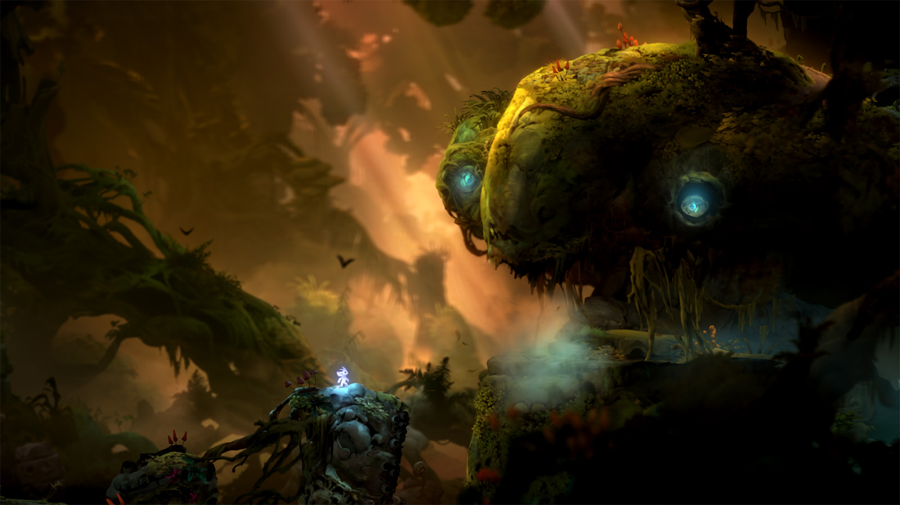
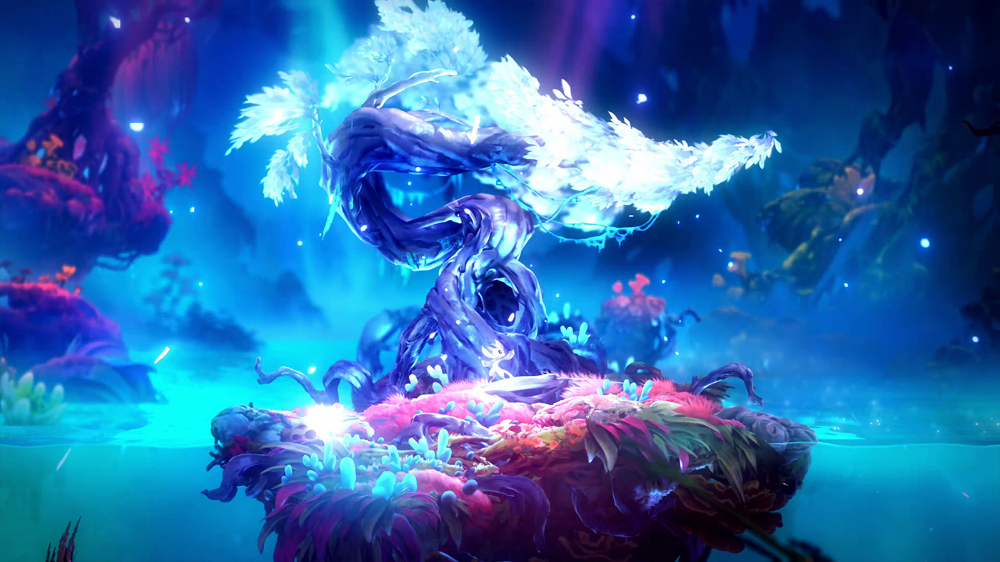
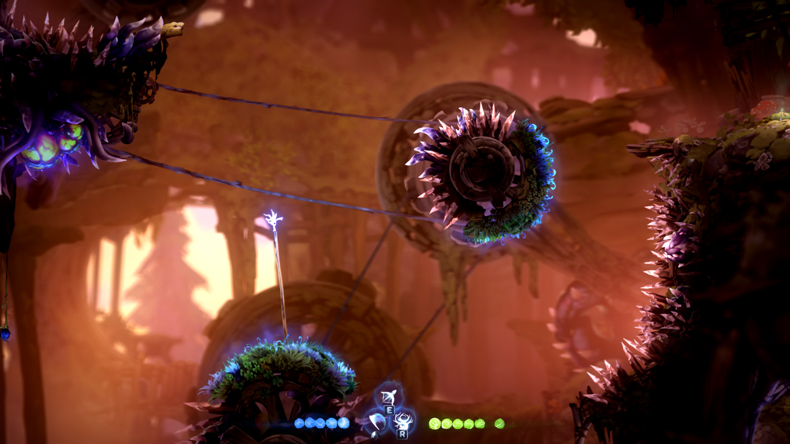
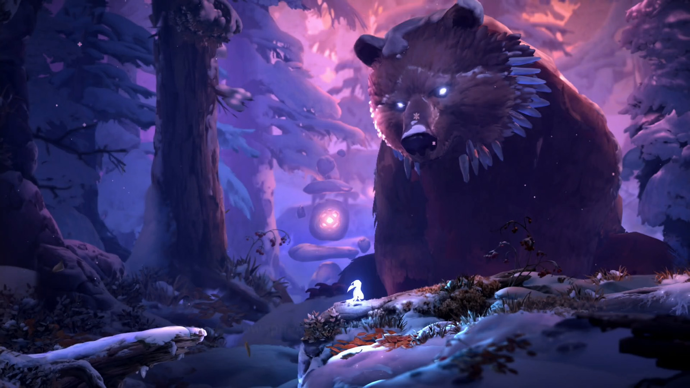
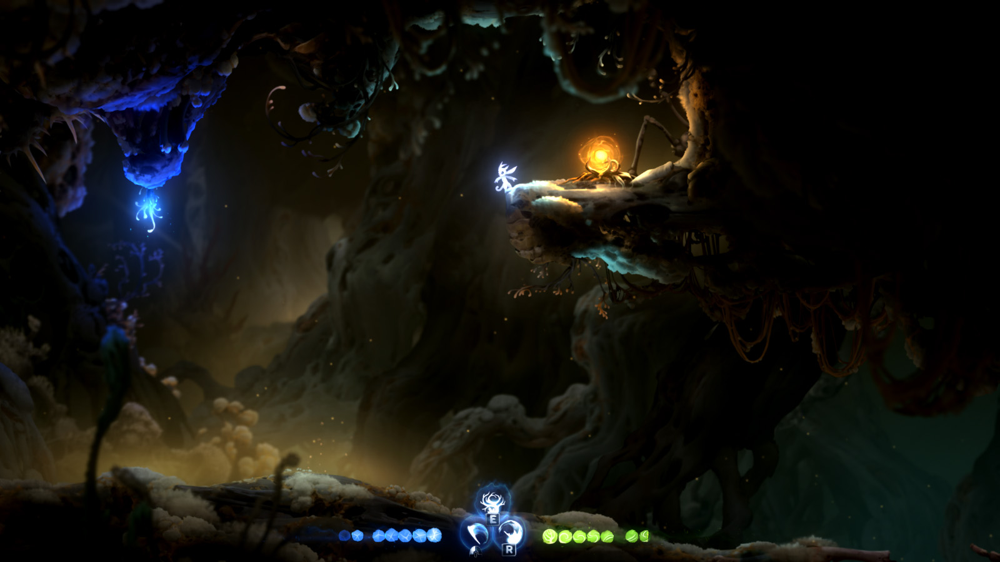
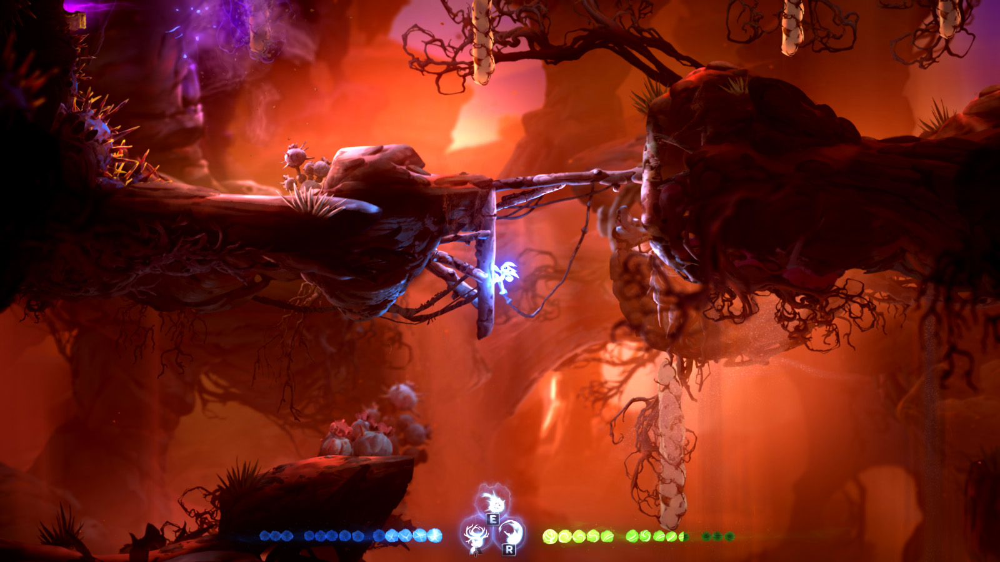

Number six: Kwolok's Hollow
This area has fun frog-statue puzzles and holds bash, Ori's greatest ability. Kwolok's Hollow cements itself as better than the majority but lacks what makes the top 5 special.
Take it from someone who has played this game multiple times, including a 100% playthrough.
Explore NiwenThe list

This area has fun frog-statue puzzles and holds bash, Ori's greatest ability. Kwolok's Hollow cements itself as better than the majority but lacks what makes the top 5 special.

This area has a chill vibe and fun aquatic movement. While the puzzles present an enjoyable and satisfying challenge, Luma Pools is a water-level, and can occasionally be slightly annoying.

This area has snappy grapple platforming and an ever-present vibe of decay. The rotating room and puzzles involving turning the mill's wheels make The Wellspring a memorable area.

This area mixes great heat-based puzzles with a frosty mountain atmosphere. The light burst ability fits well thematically, and the icy area comes alive when the furnaces are lit, granting Baur's Reach a top-3 spot on the list.

This area has an oppresive atmosphere, playing into the suffocating darkness mechanic. One of the game's coolest boss fights and a maze layout in the dark give Mouldwood Depths runner-up status.

The greatest
This area showcases what makes Ori and the Will of the Wisps a masterpiece of a game. From fluid burrowing through the sand with one of the game's most well-crafted abilities to the beautiful desert color palette, Windswept Wastes is Ori at its finest and the best area in the game.
Criteria
I focused on how fun and smooth the gameplay is and the feeling of the atmosphere to determine which areas were better than the rest.
I ignored which part of the game each area was from, and I did not take the plot elements into account at all.
Another list could differ completely from this ranking depending on the points of emphasis, such as focusing solely on gameplay.
These honorable mentions are three areas that were close to making the top six but fell short. All three suffer the same problem: they are too short compared to the other areas. However, they all present fun challenges that help them stand out.